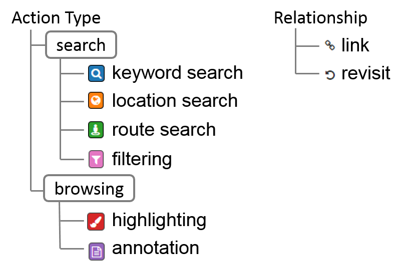

Very often, users get lost when solving a task online, such as buying a camera or planning a holidy.
SenseMap captures sensemaking actions and visualise their relationships, making it easier to:
SenseMap is available as a Chrome extension. The old version of SenseMap is no longer being maintained.
A new version called HistoryMap is currently under development. It is available on the Chrome Web Store, but not working properly yet.
P. H. Nguyen, K. Xu, A. Bardill, B. Salman, K. Herd and B. L. William Wong. SenseMap: Supporting Browser-based Online Sensemaking through Analytic Provenance, IEEE Symposium on Visual Analytics Science and Technology. 2016. PDF
SenseMap is available as a Chrome extension.
After installation, click the icon in the top-right corner of your browser to start the extension.
The old version of SenseMap is no longer being maintained. A new version called HistoryMap is currently under development. It is available on the Chrome Web Store, but not working properly yet.
You can highligh text by selecting it first and then choose highlight from the right-click menu. Click on the highlight to remove or add a note.
A snapshot of a webpage is used to help you recognize the page in the history map. You can replace the default snapshot with a picture in the webpage by right-clicking on the picture and select Set as Page Image.
Each node represents a webpage with its logo and title. The image below shows the different types of logos:
You can go back to a webpage in the browser by clicking its node.
Highlighted text is displayed below the node image (with yellow background), but limit to the maximum of 2 lines. Click on Show All from the hovering menu to see all the highlighted text. Click on the highlighted text to go back to that specific highlight.
You can highlight, minimize, curate and remove a node using the hovering menu. Node's background color: cyan for active page, yellow for favorite page, and red for brushing between two views. Dashed border indicates unvisited pages. Curated nodes have a pttle tick at the top right cornder. Click on a minimized node to maximize it.
In the top-right corner is the menu icon, from where you can create, save, or load a SenseMap. Also, you can use it to pause or resume the SenseMap.
There are several ways to pan the History Map
You can zoom the map using plus/minus button at the bottom right corner of the window.
Nodes can be added from the History Map with the Curate button in the node hovering menu. You can remove a node from the Knowledge Map using its hovering menu.
Links from collection view will be copied to the curation view when nodes are added.
You can add custom link by holding the left mouse button until the cursor changes to the arrow, then dragging it and dropping onto the targeting node.
Custom links are shown with blue color to distinguish with system links.
You can remove a link using the hovering menu.